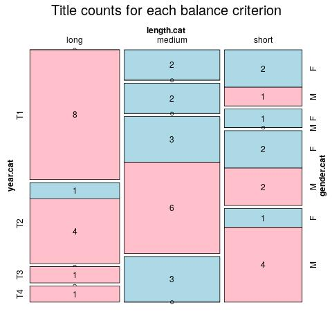

Click on a column heading to sort. Click on a text identifier to read the text (may not work in older browsers).
| Identifier | Encoding | Pages | Words | (Size) | Date (Slot) | Title | Author | Sex | Reprints |
|---|---|---|---|---|---|---|---|---|---|
| deu001 | eltec-1 | 145 | 39930 | (short) | ???? (T1) | Clementine : ELTeC edition | Lewald, Fanny (1811-1889) | F | low |
| deu002 | eltec-1 | 1737 | 321518 | (long) | 1845 (T1) | Weisse Sclaven oder die Leiden des Volkes: ELTeC Edition | Willkomm, Ernst Adolf (1810-1886) | M | low |
| deu003 | eltec-1 | 157 | 27968 | (short) | 1847 (T1) | Aus dem Leben einer Frau: ELTeC Edition | Aston, Louise (1814-1871) | F | low |
| deu004 | eltec-1 | 288 | 61793 | (medium) | 1848 (T1) | Lydia: ELTeC Edition | Aston, Louise (1814-1871) | F | low |
| deu005 | eltec-1 | 500 | 81139 | (medium) | 1849 (T1) | Revolution und Contrerevolution: ELTeC Edition | Aston, Louise (1814-1871) | F | low |
| deu006 | eltec-1 | 3588 | 891143 | (long) | 1850 (T1) | Die Ritter vom Geiste: ELTeC Edition | Gutzkow, Karl (1811-1878) | M | high |
| deu007 | eltec-1 | 782 | 385876 | (long) | 1852 (T1) | Ruhe ist die erste Bürgerpflicht: ELTeC Edition | Alexis, Willibald (1798-1871) | M | low |
| deu008 | eltec-1 | 1267 | 443364 | (long) | 1854 (T1) | Europäisches Sklavenleben: ELTeC Edition | Hackländer, Friedrich Wilhelm von (1816-1877) | M | low |
| deu009 | eltec-1 | 877 | 304824 | (long) | 1854 (T1) | Der grüne Heinrich1 [Erste Fassung]: ELTeC Edition | Keller, Gottfried (1819-1890 ) | M | high |
| deu010 | eltec-1 | 828 | 344943 | (long) | 1855 (T1) | Soll und Haben: ELTeC Edition | Freytag, Gustav (1816-1895 ) | M | high |
| deu011 | eltec-1 | 1533 | 627418 | (long) | 1855 (T1) | Sebastopol: ELTeC Edition | Goedsche, Herrmann (1816-1878) | M | low |
| deu012 | eltec-1 | 159 | 58620 | (short) !! | 1857 (T1) | Die Chronik der Sperlingsgasse: ELTeC Edition | Raabe, Wilhelm (1831-1910) | M | high |
| deu013 | eltec-1 | 855 | 288696 | (long) | 1857 (T1) | Der Nachsommer: ELTeC Edition | Stifter, Adalbert (1805-1868) | M | high |
| deu014 | eltec-1 | 950 | 277003 | (long) | 1860 (T2) | Maria Regina: ELTeC Edition | Hahn-Hahn, Ida Gräfin von (1805-1880) | F | low |
| deu015 | eltec-1 | 867 | 307789 | (long) | 1864 (T2) | Die verlorene Handschrift: ELTeC Edition | Freytag, Gustav (1816-1895) | M | low |
| deu016 | eltec-1 | 772 | 324733 | (long) | 1869 (T2) | Hammer und Amboß: ELTeC Edition | Spielhagen, Friedrich (1829-1911) | M | high |
| deu017 | eltec-1 | 382 | 108600 | (medium) !! | 1871 (T2) | Die letzte Reckenburgerin: ELTeC edition | François, Louise von (1817-1893) | F | high |
| deu018 | eltec-1 | 1374 | 715654 | (long) | 1872 (T2) | Die Ahnen: ELTeC Edition | Freytag, Gustav (1816-1895) | M | low |
| deu019 | eltec-1 | 774 | 265076 | (long) | 1876 (T2) | Kampf um Rom: ELTeC Edition | Dahn, Felix (1834-1912) | M | high |
| deu020 | eltec-1 | 653 | 193095 | (medium) !! | 1877 (T2) | Stufenjahre eines Glücklichen: ELTeC edition | François, Louise von (1817-1893) | F | low |
| deu021 | eltec-1 | 175 | 43809 | (short) | 1879 (T2) | Der Katzenjunker: ELTeC Edition | François, Louise von (1817-1893) | F | low |
| deu022 | eltec-1 | 96 | 41588 | (short) | 1880 (T3) | Lotti, die Uhrmacherin: ELTeC Edition | Ebner-Eschenbach, Marie von (1830-1916) | F | high |
| deu023 | eltec-1 | 137 | 50509 | (short) !! | 1882 (T3) | Schach von Wuthenow: ELTeC Edition | Fontane, Theodor (1819-1898) | M | high |
| deu024 | eltec-1 | 193 | 78538 | (medium) | 1887 (T3) | Das Gemeindekind: ELTeC Edition | Ebner-Eschenbach, Marie von (1830-1916) | F | high |
| deu025 | eltec-1 | 169 | 64408 | (medium) | 1887 (T3) | Im alten Eisen: ELTeC Edition | Raabe, Wilhelm (1831-1910) | M | high |
| deu026 | eltec-1 | 106 | 45654 | (short) | 1887 (T3) | Die Versuchung des Pescara: ELTeC Edition | Meyer, Conrad Ferdinand (1825-1898) | M | high |
| deu027 | eltec-1 | 1140 | 294240 | (long) | 1888 (T3) | Größenwahn: ELTeC Edition | Bleibtreu, Karl (1859-1928) | M | low |
| deu028 | eltec-1 | 70 | 31250 | (short) | 1889 (T3) | Ein kleiner Roman: ELTeC Edition | Ebner-Eschenbach, Marie von (1830-1916) | F | high |
| deu029 | eltec-1 | 194 | 75198 | (medium) | 1891 (T3) | Stopfkuchen. Eine See- und Mordgeschichte: ELTeC Edition | Raabe, Wilhelm (1831-1910) | M | high |
| deu030 | eltec-1 | 304 | 117105 | (medium) !! | 1894 (T3) | Effi Briest: ELTeC Edition | Fontane, Theodor (1819-1898) | M | high |
| deu031 | eltec-1 | 645 | 198716 | (medium) !! | 1894 (T3) | Old Surehand I: ELTeC Edition | May, Karl (1842-1912) | M | high |
| deu032 | eltec-1 | 374 | 97252 | (medium) | 1896 (T3) | Sibilla Dalmar: ELTeC Edition | Dohm, Hedwig (1831-1919) | F | low |
| deu033 | eltec-1 | 638 | 199222 | (medium) !! | 1896 (T3) | Im Lande des Mahdi I: ELTeC Edition | May, Karl (1842-1912) | M | high |
| deu034 | eltec-1 | 407 | 154053 | (medium) !! | 1897 (T3) | Der Stechlin: ELTeC Edition | Fontane, Theodor (1819-1898) | M | high |
| deu035 | eltec-1 | 419 | 104554 | (medium) !! | 1899 (T3) | Schicksale einer Seele: ELTeC Edition | Dohm, Hedwig (1831-1919) | F | low |
| deu036 | eltec-1 | 313 | 77109 | (medium) | 1902 (T4) | Christa Ruland: ELTeC Edition | Dohm, Hedwig (1831-1919) | F | low |
| deu037 | eltec-1 | 126 | 37960 | (short) | 1907 (T4) | Dumala: ELTeC Edition | Keyserling, Eduard von (1855-1918) | M | low |
| deu038 | eltec-1 | 172 | 54741 | (short) !! | 1911 (T4) | Wellen: ELTeC Edition | Keyserling, Eduard von (1855-1918) | M | low |
| deu039 | eltec-1 | 255 | 81917 | (medium) | 1914 (T4) | Mathias Bichler: ELTeC Edition | Christ, Lena (1881-1920) | F | low |
| deu040 | eltec-1 | 176 | 56937 | (short) !! | 1914 (T4) | Abendliche Häuser: ELTeC Edition | Keyserling, Eduard von (1855-1918) | M | high |
| deu041 | eltec-1 | 166 | 66165 | (medium) | 1916 (T4) | Die Rumplhanni: ELTeC Edition | Christ, Lena (1881-1920) | F | low |
| deu042 | eltec-1 | 93 | 43407 | (short) | 1918 (T4) | Casanovas Heimfahrt: ELTeC Edition | Schnitzler, Arthur (1862-1931) | M | high |
| deu043 | eltec-1 | 869 | 296267 | (long) | 1919 (T4) | Christian Wahnschaffe: ELTeC Edition | Wassermann, Jakob (1873-1934) | M | high |
| deu044 | eltec-1 | 132 | 42413 | (short) | 1920 (T4) | Madam Bäurin: ELTeC Edition | Christ, Lena (1881-1920) | F | low |